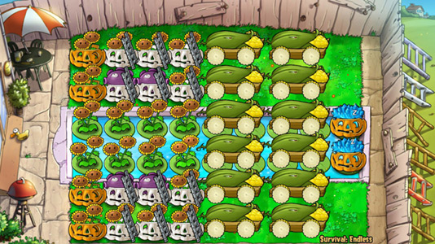

这是一份入门级的按键精灵半自动化脚本编写教程, 假定读者已经了解了无尽入门以及编程基础.
使用按键精灵自带窗口插件的Plugin.Window.Find()命令.
第一个参数为窗口类名(可忽略, 即用 0 代替), 第二个参数为窗口标题, 返回值为窗口句柄.
不推荐省略窗口类名, 因为可能存在其他标题相同的窗口从而引起查找失误.
已知所有的植物大战僵尸一代电脑版的窗口类名均为"MainWindow", 原版英文版的窗口标题为"Plants vs. Zombies".
定义一个变量 pvz, 将其赋值为找到的窗口句柄, 并利用TracePrint命令输出结果. 查找失败则退出脚本.
变量类型声明为环境变量(DimEnv), 以便于在子线程中使用.
DimEnv pvz
pvz = Plugin.Window.Find("MainWindow", "Plants vs. Zombies")
'pvz = Plugin.Window.Find(0, "Plants vs. Zombies")
'TracePrint "游戏窗口句柄为: " & pvz
If pvz = 0 Then ExitScript
按 F5 进入调试模式, 按 F10 启动脚本. 输出结果非 0 则说明成功找到了游戏窗口.
以下内存插件命令中, 第一个参数均为窗口句柄, 第二个参数均为内存地址.
Plugin.Memory.Read8Bit(): 读取 8 位数值
Plugin.Memory.Read16Bit(): 读取 16 位数值
Plugin.Memory.Read32Bit(): 读取 32 位数值
Plugin.Memory.ReadSingle(): 读取 32 位浮点数值
Plugin.Memory.ReadDouble(): 读取 64 位浮点数值
内存地址通常用十六进制数值表示, 在参数前加上前缀&H. 对于地址 X, 使用[ X ]表示其存储的数据.
32 位平台指针类型占用 4 个字节, 使用Read32Bit()读取. 布尔类型占用 1 个字节, 使用Read8Bit()读取, 0 表示 false, 1(非零) 表示 true.
以刷新倒计时[[[6a9ec0] +768] +559c]为例:
其含义可解读为, 读取地址 6a9ec0 的值记为 a, 读取地址 (a + 768) 的值记为 b, 读取地址 (b + 559c) 的值记为 c, c 即目标数值: 当前刷新倒计时.
其中 a 和 b 为指针类型, 目标数值 c 为整型. pvz 为窗口句柄.
(按键精灵语法不区分大小写, 函数名和变量名相同会冲突, 尽量不用abcxyz之类的短变量名以免命名冲突.)
'a = Plugin.Memory.Read32Bit(pvz, &H6a9ec0)
'b = Plugin.Memory.Read32Bit(pvz, a + &H768)
'c = Plugin.Memory.Read32Bit(pvz, b + &H559c)
'TracePrint "当前刷新倒计时数值为: " & c
将一些常用的内存数据获取过程封装成函数以方便调用(函数名=返回值):
GameScene() 游戏场景, 0: 白天, 1: 黑夜, 2: 泳池, 3: 浓雾, 4: 屋顶, 5: 月夜
GameUI() 游戏界面, 1: 主界面, 2: 选卡, 3: 正常游戏, 4: 僵尸进屋, 7: 模式选择
GamePaused() 游戏是否暂停, 单字节逻辑值, 不为 0 时游戏暂停
MouseInGame() 鼠标是否在游戏窗口内, 不为 0 时鼠标位于游戏窗口内部
GameClock() 一个内部时钟, 游戏暂停时停止计时
WaveCountdown() 下一波刷新倒计时, 触发刷新时重置为 200, 减少至 0 刷出下一波
HugeWaveCountdown() 大波刷新倒计时, 对于旗帜波, 刷新倒计时减少至 4 后停滞, 由该值代替减少
DanceClock() 一个内部时钟, 可用于判断舞王/伴舞的舞蹈/前进
Function GameScene()
pvzbase = Plugin.Memory.Read32Bit(pvz, &H6a9ec0)
mainobject = Plugin.Memory.Read32Bit(pvz, pvzbase + &H768)
GameScene = Plugin.Memory.Read32Bit(pvz, mainobject + &H554c)
End Function
Function GameUI()
pvzbase = Plugin.Memory.Read32Bit(pvz, &H6a9ec0)
GameUI = Plugin.Memory.Read32Bit(pvz, pvzbase + &H7fc)
End Function
Function GamePaused()
pvzbase = Plugin.Memory.Read32Bit(pvz, &H6a9ec0)
mainobject = Plugin.Memory.Read32Bit(pvz, pvzbase + &H768)
GamePaused = Plugin.Memory.Read8Bit(pvz, mainobject + &H164)
End Function
Function MouseInGame()
pvzbase = Plugin.Memory.Read32Bit(pvz, &H6a9ec0)
mainobject = Plugin.Memory.Read32Bit(pvz, pvzbase + &H768)
MouseInGame = Plugin.Memory.Read8Bit(pvz, mainobject + &H59)
End Function
Function GameClock()
pvzbase = Plugin.Memory.Read32Bit(pvz, &H6a9ec0)
mainobject = Plugin.Memory.Read32Bit(pvz, pvzbase + &H768)
GameClock = Plugin.Memory.Read32Bit(pvz, mainobject + &H5568)
End Function
Function WaveCountdown()
pvzbase = Plugin.Memory.Read32Bit(pvz, &H6a9ec0)
mainobject = Plugin.Memory.Read32Bit(pvz, pvzbase + &H768)
WaveCountdown = Plugin.Memory.Read32Bit(pvz, mainobject + &H559c)
End Function
Function HugeWaveCountdown()
pvzbase = Plugin.Memory.Read32Bit(pvz, &H6a9ec0)
mainobject = Plugin.Memory.Read32Bit(pvz, pvzbase + &H768)
HugeWaveCountdown = Plugin.Memory.Read32Bit(pvz, mainobject + &H55a4)
End Function
Function DanceClock()
pvzbase = Plugin.Memory.Read32Bit(pvz, &H6a9ec0)
DanceClock = Plugin.Memory.Read32Bit(pvz, pvzbase + &H838)
End Function
按键精灵的 Delay 命令由于各种原因会有误差, 游戏运行也不是按照理想的时间来进行的.
这里采用同步读取游戏内部时钟来实现精确延时, 时间单位均为 cs.
Sleep() 等待直到游戏时钟的差值达到指定值
PreJudge() 等待直到刷新倒计时达到指定值, 第二个参数为波数(由此针对旗帜波特殊处理)
Sub Sleep(time_cs)
clock_begin_cs = GameClock()
While (GameClock() - clock_begin_cs < time_cs)
Delay 1
Wend
End Sub
Sub PreJudge(time_cs, wave)
If wave = 10 Or wave = 20 Then
While (WaveCountdown() - 4 > 0)
Delay 1
Wend
While (HugeWaveCountdown() - time_cs > 0)
Delay 1
Wend
Else
While (WaveCountdown() - time_cs > 0)
Delay 1
Wend
End If
End Sub
游戏以窗口化运行, 窗口内容分辨率为 800 x 600. 左上角坐标(0, 0), 右下角(799, 599).
常用左键单击和右键单击两个命令, 如无特殊说明"单击"均指鼠标左键单击. 一次完整的单击包括按下和弹起.
以下几个后台插件命令中, 第一个参数均为窗口句柄, 第二个 x 坐标, 第三个 y 坐标, 坐标单位像素 (px).
Plugin.Bkgnd.LeftClick(): 鼠标左键单击
Plugin.Bkgnd.RightClick(): 鼠标右键单击
Plugin.Bkgnd.LeftDown(): 鼠标左键按下
Plugin.Bkgnd.LeftUp(): 鼠标左键弹起
Plugin.Bkgnd.RightDown(): 鼠标右键按下
Plugin.Bkgnd.RightUp(): 鼠标右键弹起
Plugin.Bkgnd.MoveTo(): 鼠标移动到
日常一般使用行(路)和列来表示格子坐标, 每次都要计算/测量像素坐标的话非常不方便, 因此加上从 "行-列" 到 "x-y" 的转换过程.
定义选卡界面点击卡片子程序:
SelectSeed(row, col) 在选卡界面选择 row 行 col 列的卡片
SelectImitaterSeed(row, col) 在选卡界面选择 row 行 col 列的模仿者卡片
LetsRock() 点击 "Let's Rock" 按钮
其中, (50, 160) 为左上角卡片中心坐标, (215, 160) 为模仿者选卡界面左上角卡片中心坐标, 单张卡片宽度 50px 高度 70px.
对于模仿者, 需要把鼠标移动到目标位置 (490, 550) 才能成功点击, 单击完毕后移回原位, 延迟 0.3s 等待界面出现再选卡.
每次选完卡均等待 0.2s.
Sub SelectSeed(row, col)
x = 50 + (col - 1) * 53
y = 160 + (row - 1) * 70
Call Plugin.Bkgnd.LeftClick(pvz, x, y)
Delay 200
End Sub
Sub SelectImitaterSeed(row, col)
SaveMousePos
Call Plugin.Bkgnd.MoveTo(pvz, 490, 550)
Delay 20
Call Plugin.Bkgnd.LeftClick(pvz, 490, 550)
RestoreMousePos
x = 215 + (col - 1) * 51
y = 160 + (row - 1) * 72
Delay 300
Call Plugin.Bkgnd.LeftClick(pvz, x, y)
Delay 200
End Sub
Sub LetsRock()
SaveMousePos
Call Plugin.Bkgnd.MoveTo(pvz, 234, 567)
Delay 200
Call Plugin.Bkgnd.LeftDown(pvz, 234, 567)
Delay 100
Call Plugin.Bkgnd.LeftUp(pvz, 234, 567)
RestoreMousePos
End Sub
定义安全右键子程序:
SafeClick() 右键单击点(60, 50), 安全右键, 用来避免操作冲突
Sub SafeClick()
Call Plugin.Bkgnd.RightClick(pvz, 60, 50)
End Sub
定义点击卡槽卡片子程序:
Seed(index) (在10格卡槽的情况下)点击卡槽中的第 n 张卡片. 点铲子可以用 Seed(12)
Sub Seed(index)
Call Plugin.Bkgnd.LeftClick(pvz, 50 + 51 * index, 42)
End Sub
定义点击格子子程序:
Grid(row, col) 点击场地上的 row 行 col 列
声明场地变量 scene, 可选值 0~9. 手动赋值或者在合适的时候自动获取.
针对不同场地使用不同的坐标转换过程.
DimEnv scene
'scene = 0 'DE
'scene = 1 'NE
'scene = 2 'PE
'scene = 3 'FE
'scene = 4 'RE
'scene = 5 'ME
scene = GameScene()
Sub Grid(row, col)
If scene = 2 Or scene = 3 Then
Call Plugin.Bkgnd.LeftClick(pvz, 80 * col, 55 + 85 * row)
Elseif scene = 4 Or scene = 5 Then
If col > 5.5 Then
Call Plugin.Bkgnd.LeftClick(pvz, 80 * col, 50 + 85 * row)
Else
Call Plugin.Bkgnd.LeftClick(pvz, 80 * col, 50 + 85 * row + 20 * (5.5 - col))
End If
Else ' 0 1 6 7 8 9
Call Plugin.Bkgnd.LeftClick(pvz, 80 * col, 40 + 100 * row)
End If
End Sub
定义用卡和用炮子程序:
C(index, row, col) 使用卡槽第 n 张卡, 种植在 row 行 col 列
P(cob_row, cob_col, row, col) 使用位于 cob_row 行 cob_col 列的玉米炮, 落点 row 行 col 列
操作前使用安全右键来避免与上一次操作冲突.
为了避免掉落物品(阳光钱币)干扰多次点击炮身后再发射.
'Sub C(index, row, col)
' Call SafeClick()
' Call Seed(index)
' Call Grid(row, col)
'End Sub
'Sub P(cob_row, cob_col, row, col)
' Call SafeClick()
' For 3
' Call Grid(cob_row, cob_col)
' Next
' Call Grid(row, col)
'End Sub
玉米炮通常是循环使用的, 所以无需每次调用时指定玉米炮所在位置, 而是由程序自动按顺序选择玉米炮. 重新定义用炮子程序:
P(row, col) 按顺序选择一门炮发射, 落点为地图上的 row 行 col 列
使用Array()函数来合成数组 paoList, 记录场地上每门炮的位置, 其中每个数组元素又是一个数组, 分别为该门炮所在的行数和列数.
paoCount 的值为场地上的玉米炮数量. UBound(paoList) 获取的是数组最大下标, 由于数组下标是从 0 开始计数的, 玉米炮总数等于该值加上一.
paoIndex 变量用来记录当前执行 P(row, col) 的时候使用的炮位序号, 从 0 开始计数(即第一门炮), 每次发炮后该值加一, 为避免溢出每次发炮前该值对玉米炮总数取模.
paoList paoCount paoIndex 变量类型均为脚本全局变量.
每次发炮时, 从当前炮位序号 paoIndex 获取该门炮的位置 paoGrid = paoList(paoIndex), 点击炮的位置 Grid(paoGrid(0), paoGrid(1)), 再点击落点 Grid(row, col).
为了避免点炮时被阳光钱币挡住可以多点几次(比如3次)炮身再发射, 极短的时间(300ms)内多次点击炮身不会原地发射.
落点与炮的位置太近的话可能造成射不出去的现象(比如坐标(5,7)的炮落点(5,7)), 可通过调整 paoList 的顺序来解决.
以PE经典十炮为例:
paoList = Array(Array(3, 1), Array(4, 1), Array(3, 3), Array(4, 3), Array(1, 5), _
Array(2, 5), Array(3, 5), Array(4, 5), Array(5, 5), Array(6, 5))
paoCount = UBound(paoList) + 1
paoIndex = 0
'Sub P(row, col)
' paoIndex = paoIndex Mod paoCount
' paoGrid = paoList(paoIndex)
' Call SafeClick()
' For 3
' Call Grid(paoGrid(0), paoGrid(1))
' Next
' Call Grid(row, col)
' paoIndex = paoIndex + 1
'End Sub
实现一个简单的互斥锁.
DimEnv lck
lck = 0
Sub Lock()
While (lck = 1)
Delay 1
Wend
lck = 1
End Sub
Sub Unlock()
lck = 0
End Sub
"完整操作"中途不能被干扰, 例如用卡包括"点击卡片"和"点击种植格子", 中间混入其他鼠标操作则很有可能导致操作失误.
每一次完整的操作前使用Lock()加锁获取操作权, 完毕后使用Unlock()解锁. 避免多线程操作互相冲突.
改进后的用卡和用炮子过程:
Sub C(index, row, col)
Call Lock()
Call SafeClick()
Call Seed(index)
Call Grid(row, col)
Call Unlock()
End Sub
'Sub P(cob_row, cob_col, row, col)
' Call Lock()
' Call SafeClick()
' For 3
' Call Grid(cob_row, cob_col)
' Next
' Call Grid(row, col)
' Call Unlock()
'End Sub
Sub P(row, col)
paoIndex = paoIndex Mod paoCount
paoGrid = paoList(paoIndex)
Call Lock()
Call SafeClick()
For 3
Call Grid(paoGrid(0), paoGrid(1))
Next
Call Grid(row, col)
Call Unlock()
paoIndex = paoIndex + 1
End Sub
自动收集子过程:
进入正常游戏场景(开场红字消失)后开始收集, 不在正常游戏场景后停止.
收集物品类型, 1: 银币, 2: 金币, 3: 钻石, 4: 阳光, 5: 小阳光, 6: 大阳光
循环遍历场上掉落物品, 排除掉消失的和已经被收集的. 对符合条件的物品获取坐标并点击, 每次点击后延时 0.1s.
游戏暂停或者鼠标位于游戏界面内时暂停收集.
Sub AutoCollectThread()
While GameUI() <> 3
Delay 100
Wend
pvzbase = Plugin.Memory.Read32Bit(pvz, &H6a9ec0)
mainobject = Plugin.Memory.Read32Bit(pvz, pvzbase + &H768)
Do
item_count_max = Plugin.Memory.Read32Bit(pvz, mainobject + &He8)
item_offset = Plugin.Memory.Read32Bit(pvz, mainobject + &He4)
For index = 0 To item_count_max - 1 Step 1
While (GamePaused() = 1 Or MouseInGame() = 1)
Delay 100
Wend
disappeared = Plugin.Memory.Read8Bit(pvz, item_offset + &H38 + &Hd8 * index)
collected = Plugin.Memory.Read8Bit(pvz, item_offset + &H50 + &Hd8 * index)
item_type = Plugin.Memory.Read32Bit(pvz, item_offset + &H58 + &Hd8 * index)
If disappeared = 0 And collected = 0 And item_type >= 1 And item_type <= 6 Then
item_x = Plugin.Memory.ReadSingle(pvz, item_offset + &H24 + &Hd8 * index)
item_y = Plugin.Memory.ReadSingle(pvz, item_offset + &H28 + &Hd8 * index)
If item_x >= 0.0 And item_y >= 70.0 Then
Call Lock()
Call Plugin.Bkgnd.LeftClick(pvz, item_x + 30, item_y + 30)
Call SafeClick()
Call Unlock()
Delay 100
End If
End If
Next
Loop While GameUI() = 3
End Sub
存冰和用冰子过程:
在有足够多的(至少四个)存冰位置的情况下, 每隔 50+s 往可用的位置存两个冰, 优先存在永久位.
下面的例子中, 卡槽 1 为原版冰, 2 为复制冰, 3 为咖啡豆.
永久存冰位 3-3 4-3, 临时存冰位 1-1 2-1, 存冰函数共有五次循环, 每次存两冰, 优先存复制冰, 优先存放在永久位.
点冰则是选咖啡豆后往所有的存冰位点一次, 优先用掉临时位.
Sub FillIceThread()
While GameUI() <> 3
Delay 100
Wend
For count = 1 To 5 Step 1
Call Lock()
Call Seed(2)
Call Grid(4, 3)
Call Grid(3, 3)
Call Grid(2, 1)
Call Grid(1, 1)
Call Seed(1)
Call Grid(4, 3)
Call Grid(3, 3)
Call Grid(2, 1)
Call Grid(1, 1)
Call Unlock()
If count <> 5
Call Sleep(5010)
End If
Next
End Sub
Sub I()
Call Lock()
Call Seed(3)
Call Grid(1, 1)
Call Grid(2, 1)
Call Grid(3, 3)
Call Grid(4, 3)
Call Unlock()
End Sub
对于复杂的情况请自行算好时间或者写更智能的函数实现.
女仆秘籍子过程:
Sub StopDancerThread()
Do
Do
dance_clock = DanceClock()
Loop Until (((dance_clock + 10) mod (23 * 20)) \ 20) <= 11
' PauseGame
If GamePaused() = 0 Then
Call Plugin.Bkgnd.KeyPress(pvz, 32)
End If
Delay 500
Do
dance_clock = DanceClock()
Loop While (((dance_clock) mod (23 * 20)) \ 20) <= 11
' RestoreGame
If GamePaused() = 1 Then
Call Plugin.Bkgnd.KeyPress(pvz, 32)
End If
Loop
End Sub
封装一些可能会用到的子过程, 比如 "在选卡界面选十张卡" "释放樱桃" "释放核蘑菇" "点咖啡豆" "在某行某列释放原版冰" "在某行某列释放复制冰" "补坚果/南瓜" "中三路种垫材垫MJ" "铲垫材" "吹风扇" "吃墓碑" 等等等等...... 这里用到的有:
ChoosingSeed() 选十张卡
A(row, col) 在 row 行 col 列释放樱桃
N(row, col) 在 row 行 col 列释放核蘑菇
下面的例子中, 卡槽 5 为樱桃, 3 为睡莲, 2 为核蘑菇, 4 为咖啡豆.
Sub ChoosingSeed()
Call SelectSeed(3, 8)
Call SelectSeed(2, 8)
Call SelectSeed(3, 1)
Call SelectSeed(5, 4)
Call SelectSeed(1, 3)
Call SelectSeed(3, 2)
Call SelectSeed(5, 6)
Call SelectSeed(2, 2)
Call SelectSeed(2, 1)
Call SelectImitaterSeed(2, 1)
End Sub
Sub A(row, col)
Call C(5, row, col)
End Sub
Sub N(row, col)
Call C(3, row, col)
Call C(2, row, col)
Call C(4, row, col)
End Sub
Main()函数: 选卡, 点击 Let's Rock, 大概 4s 后进入游戏场景, 启动自动收集线程, 执行 Waves() 函数.
某些情况下选完卡点 Let's Rock 后会出现警告窗口需要再点击一到多次 OK.
Sub Main()
Delay 3000
Call ChoosingSeed()
Delay 500
Call LetsRock()
' Delay 200
' Call Plugin.Bkgnd.LeftClick(pvz, 320, 400)
Delay 4000
BeginThread AutoCollectThread
Call Waves()
End Sub
Waves()主函数, 变量wave的值循环遍历 1-20, 编写针对每一波僵尸的操作.
分两个部分, 等待至预判时间, 执行主要操作(除第 20 波外每波操作完毕后必须设置延时保证执行到本波刷新时间点之后).
Sub Waves()
For wave = 1 To 20 Step 1
' PreJudge(950, wave)
' ...... ' Delay 1000
Next
End Sub
通常使用 0.95s 预判, 第 10/20 波预判时间延迟到 0.55s, 第 20 波预判 1.5s 可以炮炸珊瑚.
大波僵尸(10/20)倒计时规则不同, 把波数wave作为参数交给PreJudge判断.
Sub Waves()
For wave = 1 To 20 Step 1
If wave = 20 Then
Call PreJudge(150, wave)
Elseif wave = 10 Then
Call PreJudge(55, wave)
Else
Call PreJudge(95, wave)
End If
' ...... ' Delay 1000
Next
End Sub
根据 wave 值编写针对每一波的操作.
举例说明, 使用的阵型为 PE经典十炮, 节奏为核代 P6.
每一波的操作如下:
1~9 PP PP PP PP PP N PP PP PP
10~19 PPA PP PP PP PP N PP PP PP PP
20 P-PP
具体描述一下:
第 1/2/3/4/5/7/8/9/11/12/13/14/16/17/18/19 波的操作为预判 0.95s 往前场射两门炮, 落点 (2, 9) (5, 9).
第 10 波的操作为预判 0.55s 往前场射两门炮, 落点 (2, 9) (5, 9). 并且在 (2, 9) 加个樱桃以消除刷怪延迟. 炮飞行时间 3.73s, 樱桃释放后 1s 爆炸, 在 (3.73 - 1)s 后释放樱桃让樱桃与玉米炮同时(不必要同时)生效.
第 20 波的操作为预判 1.5s 炮炸珊瑚, 等待 0.95s(等效 0.55 预判) 后再炸前场, 落点 (2, 9) (5, 9).
第 6/15 波使用核蘑菇代奏. 核蘑菇与玉米炮生效时间相同, 同样在预判过后 3.73s. 嗑下咖啡豆到唤醒 1.98s, 唤醒到生效 1s, 所以要在 (3.73 - 1.98 - 1)s 后释放核蘑菇. 第 6 波弹坑 3-9, 第 15 波弹坑 4-9.
第 9/19 波还需要额外用炮手动收尾(当然也可以写好代码自动执行收尾操作), 所以要在对应波次的地方把 paoIndex 变量加上额外需要的炮数, 让第 10/20 波自动选择的炮位相应地延后. 一般第 9 波打完两炮后还需要至少 4 门炮(加上冰瓜IO), 第 19 波打完两炮后还需要 2 门炮(第 19 波无红).
设置延时来保证脚本执行到本波刷新以后再执行下一个波次的内容. 此处第 20 波不需要, 第 10 波最后的樱桃操作在刷新之后 (3.73 - 1 - 0.55 > 0) 因此也不需要, 对其他波次的操作加上Call Sleep(100)延时到本波刷新点之后 (注意不要延时到下一波预判时间后面).
综上所述, 完整的Waves()函数如下:
Sub Waves()
For wave = 1 To 20 Step 1
If wave = 20 Then
Call PreJudge(150, wave)
Elseif wave = 10 Then
Call PreJudge(55, wave)
Else
Call PreJudge(95, wave)
End If
If wave = 20 Then
Call P(4, 7)
Call Sleep(95)
Call P(2, 9)
Call P(5, 9)
Elseif wave = 10 Then
Call P(2, 9)
Call P(5, 9)
Call Sleep(373 - 100)
Call A(2, 9)
Elseif wave = 6 Or wave = 15 Then
Call Sleep(373 - 198 - 100)
If wave = 6 Then
Call N(3, 9)
Elseif wave = 15 Then
Call N(4, 9)
End If
Call Sleep(100)
Else
Call P(2, 9)
Call P(5, 9)
Call Sleep(100)
If wave = 9 Then
paoIndex = paoIndex + 4
End If
If wave = 19 Then
paoIndex = paoIndex + 2
End If
End If
Next
End Sub
最后, 执行Main()函数(特定按键触发或者直接执行).
'key = WaitKey()
'If key = 49 Then
' Call Main()
'End If
Call Main()
另一个例子, 阵型为 PE超前置十二炮.

运行节奏为ch6 |PPCC|IPP-PP|PPCC|IPP-PP|
第 1 波 PPCC, 刷新前 0.95s 两门预判炮 PP, 垫撑杆操作写到下一波.
由于从点下咖啡豆到寒冰菇生效的时间较长, 第 2 波的预判冰点咖啡豆的操作放在第 1 波进行.
本波波长 6s, 本波操作在刷新前 0.95s 开始, 中途累计延时 0, 寒冰菇从点下咖啡豆到生效 2.98s (唤醒 1.98s + 生效 1s).
采用 0.3s 预判冰, 即下一波在刷新后 0.3s 被冻住. 计算可知在 D 操作之后 (6+0.95-0-2.98+0.3)s 点下咖啡豆即可实现.
注意到第 10 波的预判时间是 55cs 而不是 95cs, 对应第 10 波的点冰前延时要改成(6+0.55-0-2.98+0.3)s.
第 2 波僵尸刷新即被冻住, 首先是两门热过渡炮处理掉矿工冰车. 落点可以左移. 放置垫材垫撑杆然后铲掉.
垫撑杆要在炮发射至少 0.81s 之后, 以免撑杆过早跳跃啃超前置炮.
另外为了避免放置垫材时间太晚撑杆跳炮, 热过渡炮时机可以适当提前, 这里为了方便仍然使用 0.95s 预判.
本波波长是由激活炮的时机决定的, 波长 12s, 预判 0.95s, 铲垫材操作之前累计延时 (0.82+1)s, 玉米炮发射后 3.73s 生效, 激活到下一波刷出 2s.
计算得知在铲垫材操作之后 (12+0.95-0.82-1-3.73-2)s 发射激活炮PP即可.
第 10 波在(2, 9)加个樱桃以消除刷怪延迟, 注意与点冰操作的先后顺序.
第 20 波八炮齐发秒杀红眼, 视情况炮炸珊瑚/冰消珊瑚/冰杀小偷/炮炸小偷, 留下一只普僵拖时间.
第 9/19 波额外留出一定的炮数手动收尾并给 paoIndex 变量加上对应的炮数(也可以算好时间自动发炮来收尾).
另外就是给每一波加个延时保证能运行到本波刷新时间点以后(这里为了方便/偷懒统一延时+①s).
额外定义种垫铲垫子过程. 开场启动存冰线程和自动收集线程.
综上所述, 完整的Waves()函数如下:
' 种垫材
Sub F()
Call C(7, 1, 9)
Call C(8, 2, 9)
Call C(9, 5, 9)
Call C(10, 6, 9)
End Sub
' 铲垫材
Sub SF()
Call C(12, 1, 9)
Call C(12, 2, 9)
Call C(12, 5, 9)
Call C(12, 6, 9)
End Sub
Sub Waves()
For wave = 1 To 20 Step 1
If wave = 20 Then
Call PreJudge(150, wave)
Elseif wave = 10 Then
Call PreJudge(55, wave)
Else
Call PreJudge(95, wave)
End If
If wave = 1 Or wave = 3 Or wave = 5 Or wave = 7 Or wave = 9 Or wave = 10 Or wave = 12 Or wave = 14 Or wave = 16 Or wave = 18 Then
Call P(2, 9)
Call P(5, 9)
If wave = 10 Then
Call Sleep(373 - 100)
Call A(2, 9)
Call Sleep(600 + 55 - (373 - 100) - 298 + 30) ' > 0
Else
Call Sleep(600 + 95 - 0 - 298 + 30)
End If
Call I()
If wave = 9 Then
Call Sleep(298 - 30 - 95)
Call P(2, 8.5)
Call P(5, 8.5)
Call Sleep(82)
Call F()
Call Sleep(100)
Call SF()
Call Sleep(1200 + 95 - (100 + 82) - 373 - 200)
Call P(2, 9)
Call P(5, 9)
Call Sleep(373 + 200 - 95)
Call P(2, 9)
Call P(5, 9)
End If
Elseif wave = 2 Or wave = 4 Or wave = 6 Or wave = 8 Or wave = 11 Or wave = 13 Or wave = 15 Or wave = 17 Or wave = 19 Then
Call P(2, 8.5)
Call P(5, 8.5)
Call Sleep(82)
Call F()
Call Sleep(100)
Call SF()
Call Sleep(1200 + 95 - (100 + 82) - 373 - 200)
Call P(2, 9)
Call P(5, 9)
If wave = 19 Then
Call Sleep(373 + 200 - 95)
Call P(2, 9)
Call P(5, 9)
Call Sleep(600 + 95 - 0 - 298 + 30)
Call I()
Call Sleep(298 - 30 - 95)
Call P(2, 8.5)
Call P(5, 8.5)
paoIndex = paoIndex + 3
End If
Elseif wave = 20 Then
Call P(4, 7)
Call Sleep(95)
Call P(2, 9)
Call P(5, 9)
Call Sleep(30)
Call P(2, 9)
Call P(5, 9)
Call Sleep(30)
Call P(2, 9)
Call P(5, 9)
Call Sleep(30)
Call P(2, 9)
Call P(5, 9)
End If
Call Sleep(100)
Next
End Sub